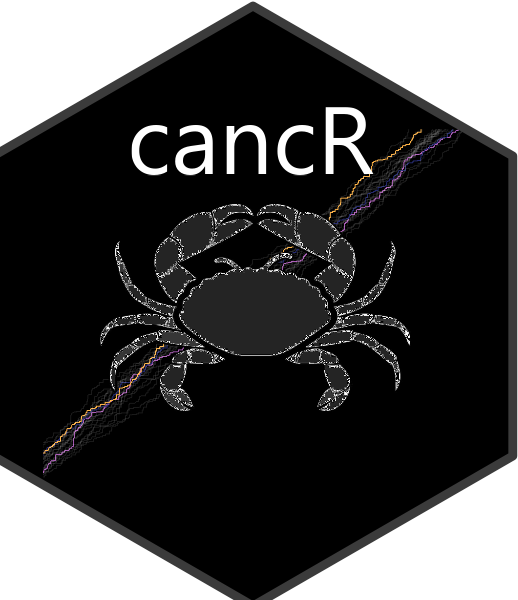

Detection of positivity violations (empty levels)
checkR.RdDetection of positivity violations (empty levels)
Arguments
- data
data frame to detect positivity violations
- treatment
the main stratum which all covariates should include all levels of (optional)
- outcome
the outcome variable which all covariates should include all levels of (optional)
- vars
the covariates to examine for positivity violations. State multiple variables as c(var1, var2, var3) without quotes.
- levels
the number of combinations of covariates. level=1 (default) corresponds to a 2x2 table, whereas level=2 corresponds to 2x2 tables stratified on e.g. treatment
- quantiles
quantiles for binning of continuous covariates
- id
column indicating unique patient identifier for returning specific NAs